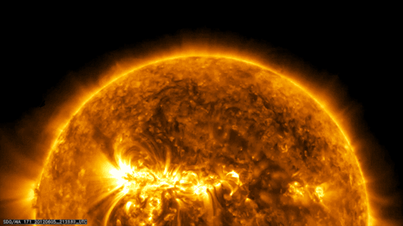
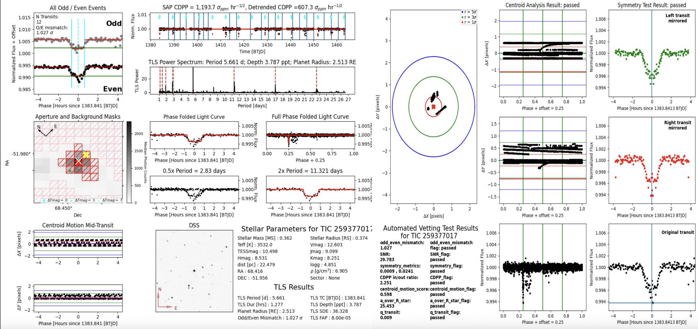
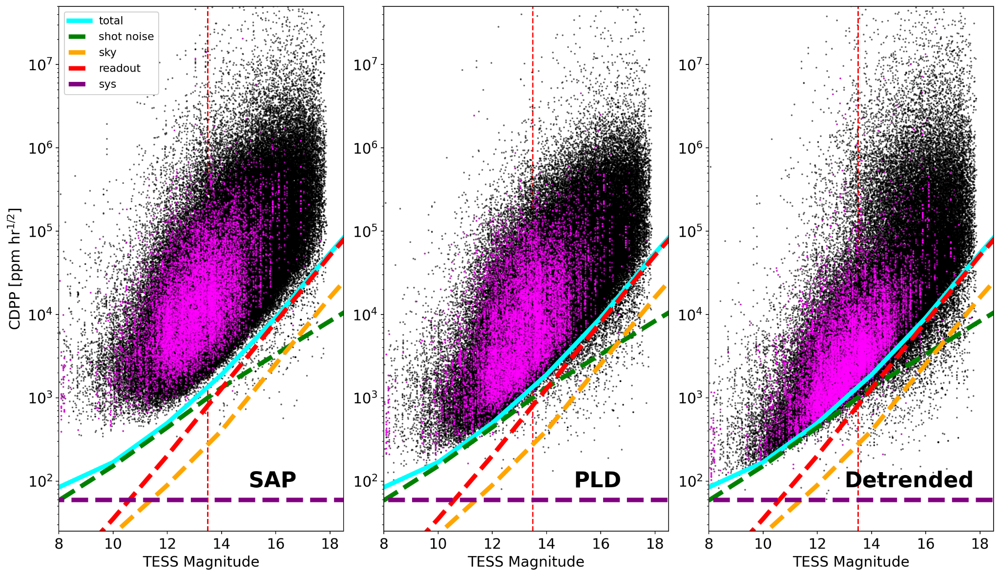
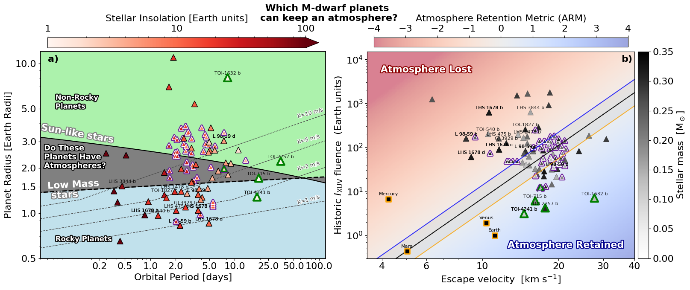

Growing up in Spanish Harlem, New York City's light pollution denied me a clear view of the night sky — but it never stopped me from asking what lay beyond the steel and glass. The Moon was my first obsession, and from it came the questions that still drive my work: Where did the planets come from? Are there other worlds out there? Which of them could sustain an atmosphere, or even life?
Those questions now constitute my research program. I am a Flatiron Research Fellow at the Center for Computational Astrophysics (CCA), Flatiron Institute, NYC, working on an end-to-end observational framework to forecast atmosphere retention in nearby M-dwarf planetary systems.
My approach combines three threads: (1) a completeness-controlled transit survey of M-dwarfs in TESS Full Frame Images (NEMESIS); (2) multi-epoch stellar flare frequency distributions and activity evolution from TESS, K2, and ground-based photometry; and (3) Galactic-context characterization via Gaia kinematics and SDSS spectroscopic metallicities. The long-term output is a ranked, observation-ready target list for atmospheric characterization with JWST, Roman, and PLATO.
Before joining the CCA, I was a Postdoctoral Researcher at the American Museum of Natural History (2022–2024), a Postdoctoral Researcher at Vanderbilt University (2022), and a Visiting Graduate Student Fellow at George Mason University (2021–2022). I completed my PhD in Astrophysics at Vanderbilt University in 2022 (advisor: Dr. Keivan Stassun), my M.A. in Physics at Fisk University in 2018, and my B.S. in Astrophysics at UMass Amherst in 2013.
Refereed papers
First-author
Citations
h-index
Mentees
Metrics via NASA ADS as of .
Research

My research program asks a single driving question: which nearby M-dwarf planets are most likely to retain an atmosphere, and how do we prioritize them for follow-up? Answering it requires connecting planet detection, stellar activity history, and Galactic context into one coherent framework.
NEMESIS: Exoplanet Transit Survey of Nearby M-dwarfs in TESS FFIs
Transit SurveyPipeline
The NEMESIS pipeline extracts light curves from TESS Full Frame Images (FFIs), removes instrumental systematics, and runs completeness-controlled periodic transit searches — targeting nearby M-dwarfs that are too faint or too crowded to be pre-selected as 2-minute TESS targets.
NEMESIS I (Feliz et al. 2021): Survey of 33,000+ M-dwarfs within 100 pc in TESS Sectors 1–5. Detected 29 planet candidates, 24 of which were new detections not flagged by SPOC or QLP. One NEMESIS candidate is now the confirmed planet TOI-7384 b (Scott et al. 2026, MNRAS). Data products: filtergraph.com/NEMESIS.
NEMESIS II (in prep.): Scale-up to the full TESS primary mission. Current yield: 6,300+ threshold crossing events (SNR > 10), with early automated vetting producing ~150 new planet candidates. The pipeline now incorporates odd-even depth comparisons, centroid motion tests, and a/R★ cuts. Based on our detection efficiency from NEMESIS I, we expect ~120 CTOIs for the full primary mission, supplementing the ~500 M-dwarf TOIs currently in the ExoFOP catalog.
Example pipeline output for the multi-planet M-dwarf system TOI 270 (TIC 259377017, Teff = 3532 K). From top: SAP flux, PLD-corrected, smoothed, and fully detrended light curve. CDPP improves from 1218 to 586 ppm hr−½.

Automated vetting report for a NEMESIS II planet candidate (TIC 259377017). Panels show (clockwise from top-left): odd/even transit depth comparison, detrended light curve with transit markers, TLS power spectrum, phase-folded transit, centroid motion mid-transit, aperture mask, and pass/fail results for all automated vetting metrics.

NEMESIS II photometric noise floor across the full TESS primary mission M-dwarf sample. CDPP vs. TESS magnitude for SAP (left), PLD-corrected (center), and fully detrended (right) light curves. Colored curves show predicted noise contributions; the red dashed line marks the faint-end survey limit.
Stellar flares are not just nuisances for transit searches — they are the primary record of a star's historical XUV output and thus the dominant driver of atmospheric escape. I am building multi-epoch flare frequency distributions (FFDs) for nearby M-dwarfs using TESS, K2, and ground-based photometry, with the goal of reconstructing each star's cumulative high-energy irradiation history.
Related work includes a NASA TESS Guest Investigator Cycle 9 proposal (PI: D. L. Feliz, under review): Long-Term Evolution of M-dwarf Flare Activity with K2, TESS, and Ground-Based Photometry. I am also a member of the ESA PLATO Flare Removal Working Group (2020–present), developing algorithms to detect and remove flare signatures from PLATO photometric time series.
Collaborative contributions: Paudel et al. 2024 (multiwavelength TESS/K2/Swift/HST M-dwarf flare survey); Cool Stars 22 poster on photometric activity cycles in M-dwarfs (Zenodo).
Future Directions: From Detections to Atmosphere Forecasts
TESS / JWST / Roman / PLATOIn Progress
The transit survey and flare activity programs are not ends in themselves — they are the foundation for a longer-term question: which nearby M-dwarf planets are most likely to retain an atmosphere, and how do we prove it with data? The demographic signature of the radius valley hints that atmospheric escape is shaping planet populations, but demographics alone cannot tell us which individual planets are worth targeting with JWST or Roman. The Cosmic Shoreline (Zahnle & Catling 2017) offers a physical bridge: it separates worlds that retain atmospheres from those that don't as a function of cumulative stellar irradiation and escape velocity — turning a population-level hint into a per-planet, testable boundary.

Which M-dwarf planets can keep an atmosphere? (a) NEMESIS planet candidates in orbital period–radius space, color-coded by stellar insolation. The radius valley boundary separating rocky planets from sub-Neptunes is shown for both Sun-like and low-mass stars, with RV detection thresholds overlaid. (b) The same planets placed on the Cosmic Shoreline (historic XUV fluence vs. escape velocity), color-coded by the Atmosphere Retention Metric (ARM). Solar System bodies (squares) anchor the empirical atmosphere-loss boundary. Planets in the blue region are strong candidates for retained atmospheres and priority targets for JWST / Roman follow-up.
My research group will build the Atmosphere Retention Metric (ARM) — a predictive, completeness-aware framework with three interlocking components. First, the NEMESIS catalog provides a vetted, completeness-characterized nearby M-dwarf planet sample with uniform Gaia kinematic ages and SDSS spectroscopic metallicities, placing each system consistently in period–radius and escape velocity–IXUV space. Second, a targeted mass-anchor program — using EPRV where stellar activity permits, and TTVs or informative upper limits otherwise — pins down escape velocities for the highest-leverage planets using an information-gain targeting strategy. Third, the stellar activity program delivers per-star XUV histories from multi-epoch flare frequency distributions and rotation periods, which feed into a predictive model that allows the atmosphere-loss boundary to shift with stellar age and composition.
The output is a per-planet atmosphere-retention probability with uncertainty, and a ranked, observation-ready spectroscopy target list for JWST, Roman, and PLATO. Roman's wide-field time-domain coverage will extend the nearby M-dwarf sample to longer periods and improve activity baselines; PLATO's long time coverage and stellar characterization will link demographics to age and evolutionary state. Together, these missions transform the current planet-discovery era into a forecasting era — and the ARM framework is designed to be the tool that connects them.
A Multi-Year Transit Search of Proxima Centauri
Using 329 ground-based light curves spanning 2006–2017, we searched for transit events of the candidate planet Proxima Centauri b (P ≈ 11.2 d, depth ≈ 5 mmag). In Blank et al. 2018 (corresponding author: Feliz) we found no corroborating evidence for previously claimed transit epochs. In Feliz et al. 2019 we extended the analysis to 262 high-quality light curves over P = 1–30 d, ruling out transits at the 11.186 d period with high confidence via transit injection-recovery.
Artist's impression of Proxima Centauri b. Credit: ESO.
Dax L. Feliz, Peter Plavchan, Samantha N. Bianco, et al.
NEMESIS: Exoplanet Transit Survey of Nearby M-dwarfs in TESS FFIs. I.
The Astronomical Journal, 161(5):247, May 2021.
[arXiv]
Dax L. Feliz, David L. Blank, Karen A. Collins, et al.
A Multi-year Search for Transits of Proxima Centauri. II. No Evidence for Transit Events with Periods between 1 and 30 days.
The Astronomical Journal, 157(6):226, Jun 2019.
[Journal]
David L. Blank, Dax L. Feliz** (corresponding author), Karen A. Collins, et al.
A Multi-year Search for Transits of Proxima Centauri. I. Light Curves Corresponding to Published Ephemerides.
The Astronomical Journal, 155(6):228, Jun 2018.
[Journal]
Key Collaborative Publications
Peter Plavchan, Thomas Barclay, Jonathan Gagné, …, Dax Feliz, et al.
A planet within the debris disk around the pre-main-sequence star AU Microscopii.
Nature, 582(7813):497–500, June 2020.
[Journal]
Heike Rauer, Conny Aerts, Cabrera, …, D. L. Feliz, et al.
The PLATO mission.
Experimental Astronomy, 59(3):26, June 2025.
[arXiv]
Karen A. Collins, Kevin I. Collins, Joshua Pepper, …, Dax L. Feliz, et al.
The KELT Follow-up Network and Transit False-positive Catalog: Pre-vetted False Positives for TESS.
The Astronomical Journal, 156(5):234, Nov 2018.
[Journal]
Selected Peer-Reviewed Publications (Nth Author)
Curated for thematic relevance to M-dwarf exoplanet detection, stellar activity, and time-domain photometry.
Full list of 31 papers on NASA ADS.
Madison G. Scott, Georgina Dransfield, Mathilde Timmermans, …, Dax L. Feliz, et al.
Two temperate Earth- and Neptune-sized planets orbiting fully convective M dwarfs.
MNRAS, January 2026.
[arXiv] — Confirms NEMESIS I candidate TOI-7384 b.
Rishi R. Paudel, Thomas Barclay, Allison Youngblood, …, Dax L. Feliz, et al.
A Multiwavelength Survey of Nearby M Dwarfs: Optical and Near-ultraviolet Flares and Activity with Contemporaneous TESS, Kepler/K2, Swift, and HST Observations.
ApJ, 971(1):24, August 2024.
[Journal]
Lionel J. Garcia, Daniel Foreman-Mackey, Catriona A. Murray, …, Dax L. Feliz, et al.
nuance: Efficient Detection of Planets Transiting Active Stars.
AJ, 167(6):284, June 2024.
[arXiv]
Justin M. Wittrock, Peter P. Plavchan, Bryson L. Cale, …, Dax L. Feliz, et al.
Validating AU Microscopii d with Transit Timing Variations.
AJ, 166(6):232, December 2023.
[arXiv]
Ian Stotesbury, Billy Edwards, …, Dax L. Feliz, et al.
Twinkle: a small satellite spectroscopy mission for the next phase of exoplanet science.
SPIE, 12180:1218033, August 2022.
[arXiv]
Justin M. Wittrock, Stefan Dreizler, Michael A. Reefe, Brett M. Morris, …, D. L. Feliz, et al.
Transit Timing Variations for AU Microscopii b and c.
AJ, 164(1):27, July 2022.
[arXiv]
Christina Hedges, Alex Hughes, George Zhou, …, D. L. Feliz, et al.
TOI-2076 and TOI-1807: Two Young, Comoving Planetary Systems within 50 pc Identified by TESS.
AJ, 162(2):54, August 2021.
[Journal]
Heike Rauer, Conny Aerts, …, D. L. Feliz, et al.
The PLATO mission.
Experimental Astronomy, 59(3):26, June 2025.
[arXiv] — ESA PLATO Flare Removal Working Group member.
Selected invited and contributed talks. Full record in CV.
Invited Colloquia & Seminars
InvitedFrom Exoplanet Detections to Atmosphere Forecasts Around Nearby M-Dwarfs Job Talk / Departmental Seminar · NYC College of Technology Physics Dept., February 2026
[Slides]
InvitedNEMESIS I: Exoplanet Transit Survey of Nearby M-dwarfs in TESS FFIs I
MIT TESS Science Talk (Mar 2021) ·
Rubin LSST TVS Seminar (Jun 2021) ·
Center for Exoplanets & Habitable Worlds Seminar, Penn State (Sep 2021)
Invited Conference & Workshop Talks
InvitedNEMESIS II: Exoplanet Transit Survey of Nearby M-dwarfs in TESS FFIs
Emerging Researchers in Exoplanets (ERES) X, Princeton University (Jun 2025) ·
"From Trends to Transits" Workshop, University of New Mexico (Aug 2025)
InvitedM-dwarfs are cool! AstroFest, Flatiron CCA, September 2024 & September 2025
InvitedTwinkle, Twinkle Little Star Twinkle and the Next Generation of Exoplanet Scientists Conference, September 2021
Contributed Talks & Posters
ContributedNEMESIS II: Exoplanet Transit Survey of Nearby M-dwarfs in TESS FFIs
TESS Science Conference III, MIT (Jul 2024) [Zenodo] ·
Sagan Summer Workshop, Caltech (Jul 2025) [Poster]
PosterCan Photometric Flares Be Used To Identify Activity Cycles in M-dwarf Stars? Cool Stars 22 (Jul 2024) [Zenodo]
PosterNEMESIS I: Exoplanet Transit Survey of Nearby M-dwarfs in TESS FFIs I
Cool Stars 20.5 (Mar 2021) [Zenodo] ·
TESS Science Conference II (Aug 2021) [Zenodo]
Dissertation & Thesis Defenses
DefensePhD Dissertation Defense, Vanderbilt University [Slides]
DefenseA Multi-Year Transit Search of Proxima Centauri — Master's Thesis Defense, Fisk University August 2018 [Slides]
I have mentored 14 students across high school, undergraduate, and graduate levels. Projects span exoplanet transit detection, stellar flare analysis, and time-series modeling. Trainees have advanced to PhD programs, staff scientist positions, and industry roles.
Graduate Students
CUNY Master's · CCA · 2024–Present
Andrea Bracamonte, CUNY Graduate Center
Searching for M-dwarf Coronal Mass Ejections with TESS and SDSS-V. Co-advised with Dr. Ruth Angus.
Project feeds CME detection framework and flare-rate priors into the NEMESIS ARM program.
CUNY Master's · AMNH/CCA · 2022–2024
Ryan Lebron, CUNY Graduate Center
Using Gaussian Processes to model stellar rotation in Zwicky Transient Facility photometry. Co-advised with Dr. Ruth Angus.
GP-derived rotation period catalog used as stellar activity priors in NEMESIS ARM.
Undergraduate Students
Barnard Summer Research Institute · AMNH · 2024
Madeline J. Maldonado Gutierrez, Barnard College of Columbia University
Detection and Validation of Transiting Exoplanets Around Nearby M-dwarf Stars.
AMNH REU · 2023
Maliyah Adams, Arizona State University
Detecting Exoplanets Around Nearby M-dwarf Stars from the Revised TESS Habitable Zone Catalog.
Central American-Caribbean Bridge Program · 2020–2021
Bryan Villarreal Alvarado, Universidad de Costa Rica
Recovery of known TESS Objects of Interest from TESS FFIs.
Summer Research Internship · Vanderbilt · 2019–2021
Samantha N. Bianco, Vanderbilt University (co-mentored with Dr. Keivan Stassun)
TESS transit survey of M-dwarf stars.
Co-author on Feliz et al. 2021. First student to complete an Immersion Vanderbilt project. Now at STScI. Press coverage.
Summer Research Internship · Vanderbilt · 2019–2020
Mary Jimenez, George Mason University (co-mentored with Dr. Peter Plavchan)
Blind transit survey of TESS data for M-dwarf systems.
Co-author on Feliz et al. 2021.
High School Students
AMNH Science Research Mentoring Program · 2023–2024
Thamim Chowdhury, Shreeya KC, Kylor Ghai
Detection of Transiting Exoplanets and Eclipsing Binaries Around Nearby M-dwarf Stars.
AMNH Science Research Mentoring Program · 2022–2023
August Fischer, Donovan Bradley, Jashcelyn Canada
Detection of Transiting Exoplanets and Eclipsing Binaries Around Nearby M-dwarf Stars.
School for Science and Math at Vanderbilt · 2019
Felix Bean, Hunter's Lane High School
Detecting exoplanet transits in TESS light curves.
CUNY Bridge Programming Bootcamp
Each August since 2022, I serve as curriculum developer and lead instructor for a two-week programming bootcamp welcoming incoming students to the CUNY Master's Program in Astrophysics. The bootcamp is designed for students of varied computational backgrounds and is built around the tools and workflows they will encounter immediately in their graduate research.
What the course covers
The curriculum spans two weeks of daily instruction (~10–15 students per cohort) and includes Python fundamentals, scientific computing with NumPy and pandas, data visualization with Matplotlib, working with astronomical data formats (FITS, light curves, catalogs), version control with Git/GitHub, and an introduction to the NYC astronomy community and its research groups. All materials are open and publicly available.
Who it is for
Incoming students in the CUNY Master's in Astrophysics program — particularly those coming from institutions with limited access to research computing infrastructure. No prior Python experience is assumed. The course is paced to bring students from first principles to research-ready in two weeks, with an emphasis on the specific tools used in time-domain photometry and exoplanet research.
Editions
August 2022 · August 2023 · August 2024 · August 2025